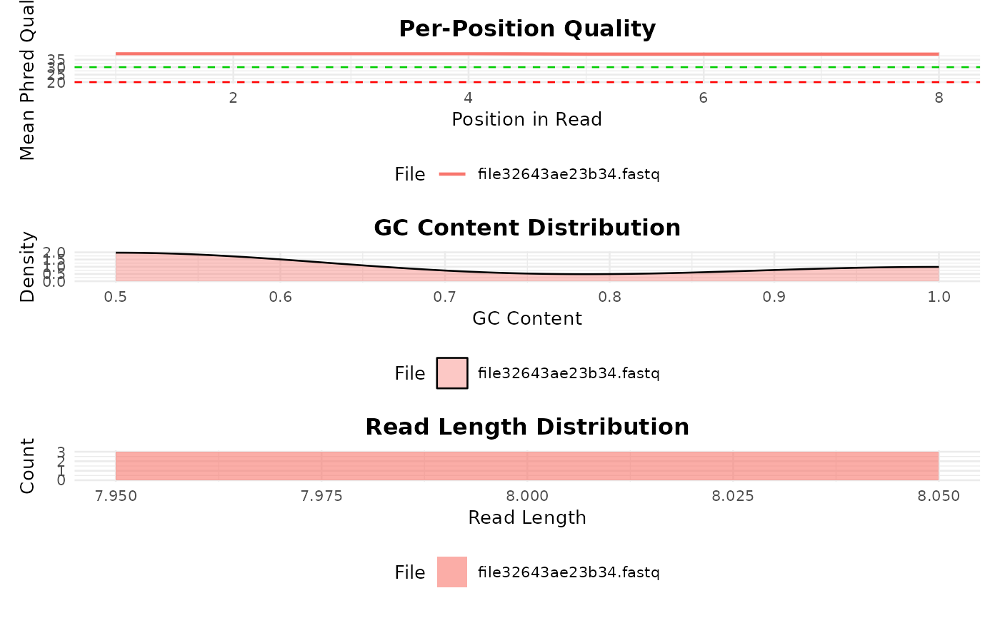

Creates a panel of QC plots from a bb_qc object, including read quality
per position, GC content distribution, and read length distribution.
Usage
bb_plot_qc(qc_object, which = c("all", "quality", "gc", "length"))Arguments
- qc_object
A
bb_qcobject frombb_qc().- which
Character. Which plot to generate:
"quality","gc","length", or"all". Default"all".
Value
A ggplot2::ggplot object (or a patchwork composition if
which = "all" and patchwork is available).
Examples
# \donttest{
tmp <- tempfile(fileext = ".fastq")
writeLines(c(
"@r1", "ACGTACGT", "+", "IIIIIIII",
"@r2", "GCGCGCGC", "+", "HHHHHHHH",
"@r3", "ATATGCGC", "+", "GGGGFFFF"
), tmp)
qc <- bb_qc(fastq_path = tmp)
bb_plot_qc(qc)

# }